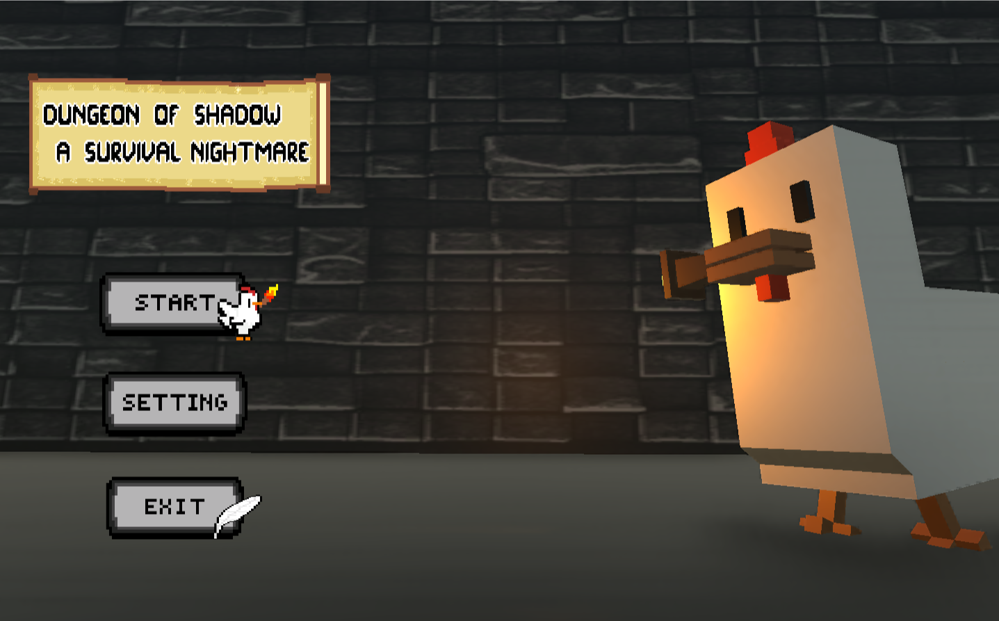
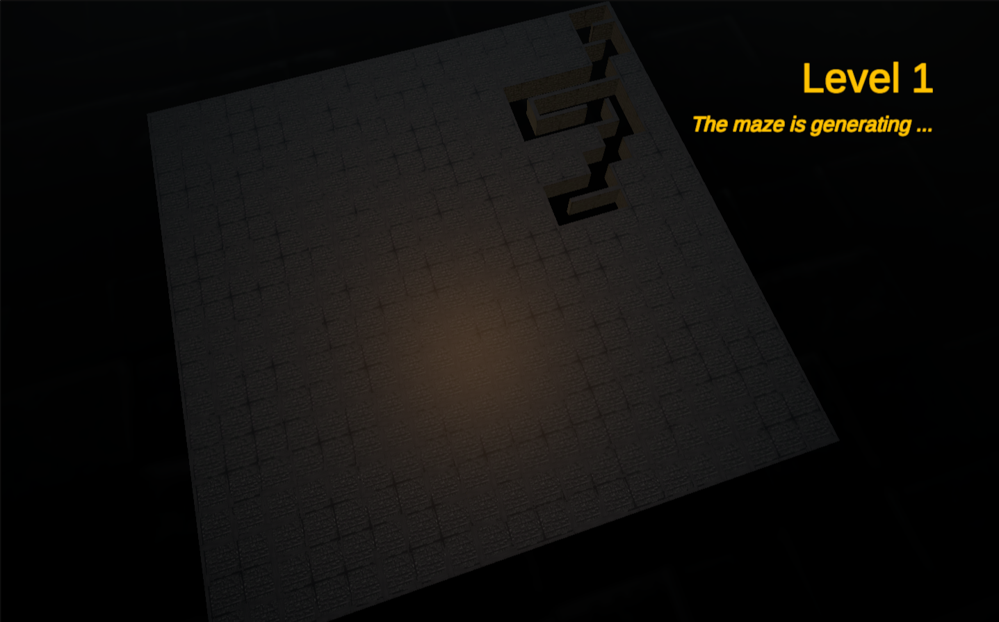
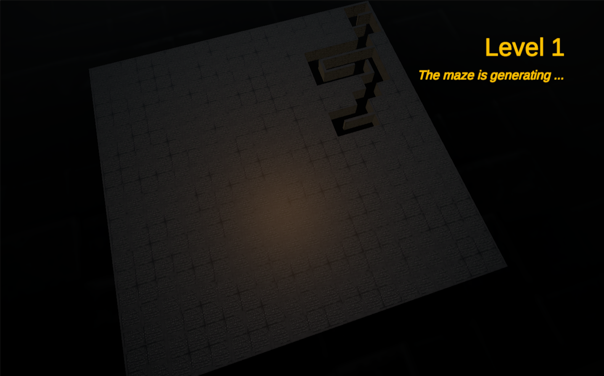
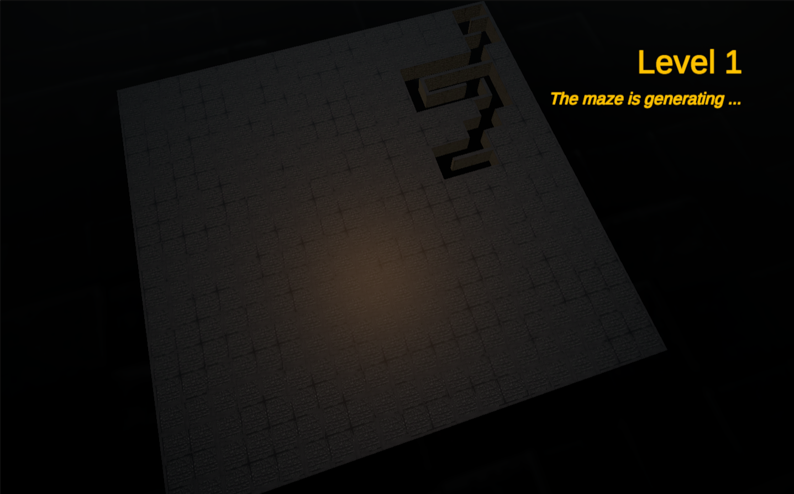

Dungeons Of Shadow
Type: Unity Game Development (PC)
Description: พัฒนาเกมแนว Maze Escape โดยใช้ Prim’s Algorithm ในการสุ่มสร้างเขาวงกต เพื่อเพิ่มความท้าทายและความหลากหลายของด่าน
My roles: รับผิดชอบระบบเกมหลัก (Core Game Mechanics) ครอบคลุมทุกระบบ เช่น การสร้างเขาวงกต, การเคลื่อนไหวผู้เล่น, ระบบศัตรู (Enemy AI), และการต่อสู้กับบอส (Boss Battles)
Technologies Used:
- Unity Engine
- Blender (3D Modeling)
- C# Scripting
Features:
- 3D Maze generation using Prim’s Algorithm
- Enemy AI system
- Boss battles

 


Note: This project is PC-only, but a WebGL demo is available. Try it using the button below (may lag since it’s not optimized for WebGL):
Try Demo ← Back to Home